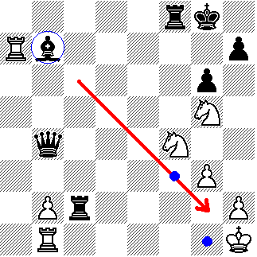
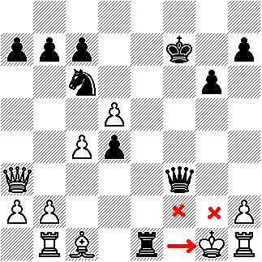
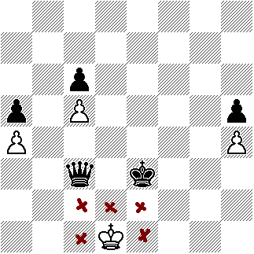

Ritmo de la partida
Cada jugador realiza una jugada a la vez. Siempre inicia el bando de las blancas, luego, contestan las negras, y así sucesivamente hasta finalizar la partida.
Jaque
El rey durante el transcurso de la partida nunca debe ser capturado, ni atacado. La acción de poner una pieza que ataque el rey se denomina jaque. Si alguno de los jugadores ataca el rey adversario debe announce "jaque!".
Existen tres vías de rehuir de un jaque:
- Moviendo el rey, de tal manera que huya del ataque.
- Interponiendo una pieza entre el rey y el atacante.
- Capturando la pieza que agrede al rey.

Mate
El Mate es un caso especial de jaque, pues, en un mate el rey se encuentra atacado con la diferencia que no existe posibilidad alguna de escapar del jaque.

Tablas (empate)
Cuando el rey no tiene posibilidades de moverse y no está atacado, se dice que el rey está ahogado y la partida se establece empatada o en tablas.

Dos reyes nunca pueden estar juntos.